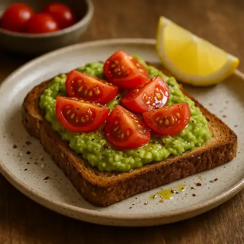
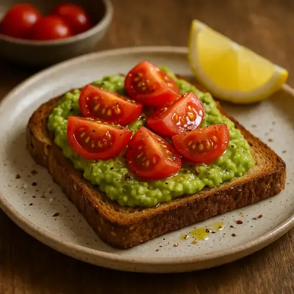
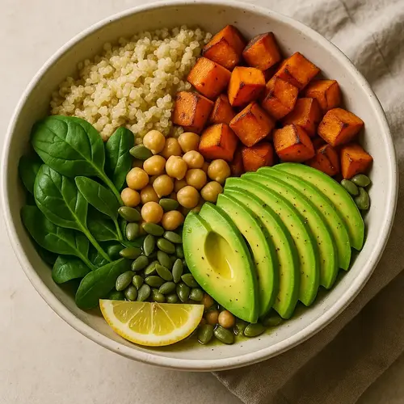
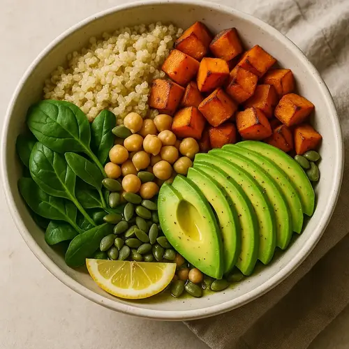

Lentil & Spinach Soup
A hearty 30-minute soup rich in plant protein and iron.
Ingredients:
-
 1 Tbsp olive oil
1 Tbsp olive oil
-
1 onion, diced
-
1 carrot, diced
-
1 celery stalk, diced
-
2 garlic cloves, minced
-
1 cup dry red lentils, rinsed
-
400 g canned diced tomatoes
-
4 cups vegetable broth
-
2 cups baby spinach
-
1/2 tsp ground cumin
-
Sea salt & black pepper to taste
Instructions:
-
Heat oil in a pot; sauté onion, carrot, celery 4 min.
-
Add garlic & cumin; cook 1 min.
-
Stir in lentils, tomatoes and broth; bring to boil.
-
Simmer 15 min until lentils tender.
-
Stir in spinach until wilted, season and serve.
More recipes
 

Avocado & Tomato Wholegrain Toast
Creamy avocado spread over toasted wholegrain bread, topped with juicy tomatoes.


One-Pan Lemon Garlic Salmon with Asparagus
A 15-minute weeknight dinner of flaky salmon and tender asparagus.
 

Quinoa Veggie Power Bowl
A balanced bowl of fluffy quinoa, roasted veggies and healthy fats.